Introduction to the Java programming language, beginning with the concepts of classes and objects and instruction in the use of a key tool used throughout the course, namely the BlueJ Integrated Development Environment (IDE).
It is very important to select the correct BlueJ version to download.
A link to the download page is provided below but before opening the page, you are recommended to note the following:
Windows users should select the BlueJ Combined Installer that includes JDK, the Java Development Kit.
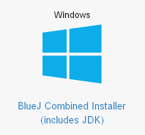
For those who use Mac OSX Lion 10.7 or later select the BlueJ Installer that includes Oracle JDK
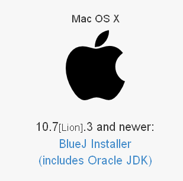
A different download is available for MacOSX Lion 10.7.2 and earlier versions.
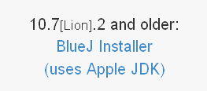
For users of Ubuntu or Debian Linux there is a different download.
Finally, for operating systems other than the above, it's necessary to download the Oracle JDK and BlueJ Installer separately.
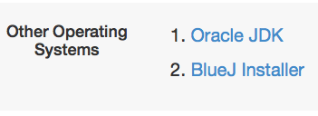
Once you have decided on the correct download select the appropriate downloads from this site.
Information on the installation procedure is provided in the next step.
Select and click on the downloaded BlueJ installer.
The result will vary with your operating system but the general steps should be similar.
Here are some of the screens for an installation on Windows XP.
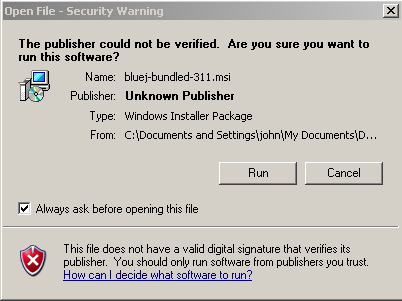
Accept the default suggestions as you step through the BlueJ Setup Wizard.
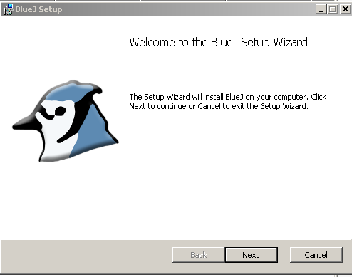
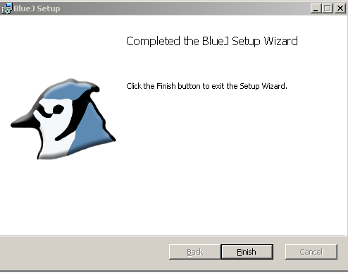
Once the installation is complete, launch BlueJ.
If the launch fails this may be because the Java component has not installed properly.
A fallback method to resolve this is to install Oracle's Netbeans IDE details for which are available here. This ought to install the missing Java infrastructure.
Once setup has completed you may find that creating a shortcut or alias on your desktop helps during the various lab sessions.
Helpful information on working with files and folders is available here for Windows and here for Mac users.
We suggest you create a folder on your computer named workspaceBlueJ and use this for the entire sequence of upcoming labs.
BlueJ sample code will be saved to the blueJ directory.
Your code will be saved to the sessions directory with subdirectories as shown, one for each lab.
This is illustrated in Figure 4.
Before launching BlueJ:
Download an archive of Chapter 1 sample projects provided by BlueJ, available here. These projects are in a file named chapter01.zip.
Save the file to the workspaceBlueJ/blueJ folder.
For the remaining BlueJ labs we should, therefore, progressively build a directory structure as shown in Figure 1.
![Figure 1: Proposed directory structure] (./img/directoryStructure.png)
Launch BlueJ using the alias created earlier or otherwise (Figure 2).
From the BlueJ menu chose Project | Open Project. Navigate to the chapter01 folder within the workspaceBlueJ folder, select and open shapes project(Figure 3).
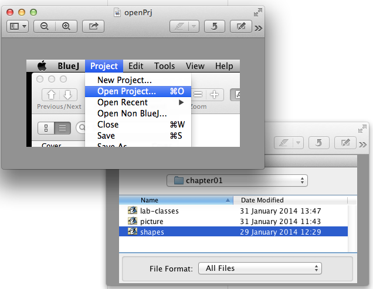
You should be presented with a window as shown in Figure 4. This gives a graphical representation of classes. For example, a Circle or Square class and so on.
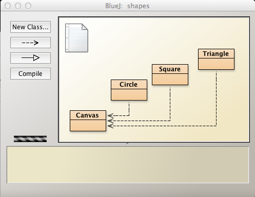
We will now create an instance of the Circle class.
Before proceeding, however, one should check if the rectangle representing the Circle class is hatched, which indicates compilation is required. See Figure 1.
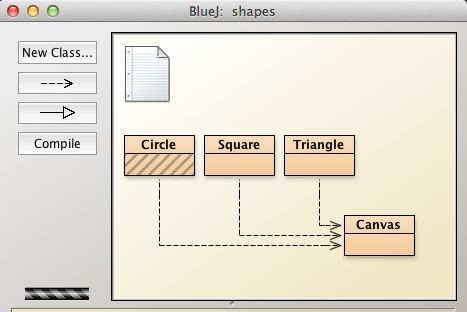
If necessary, you can compile a class by pressing the compile button on the left. This will cause all the classes in the BlueJ window to be compiled.
The process of creating an instance of a class is called instantiation. For example, to create an instance of a Circle, place the cursor on the Circle class and right click. You should be presented with a drop-down menu as shown in Figure 2.
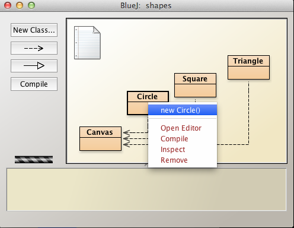
Select and click on the new Circle() expression in the menu.
This action invokes the Circle class constructor.
You will be presented with a dialog box as shown in Figure 3 - the small BlueJ Create Object window.
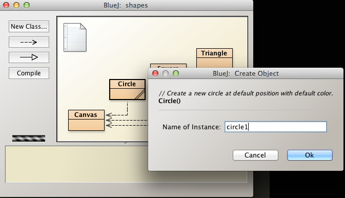
In the Name of Instance text box, enter circle1. This is the name of the object that is now being created.
Notice that a graphical representation of the circle1 object appears at the foot of the Shapes window. This is located in what is termed the object bench. See Figure 4.
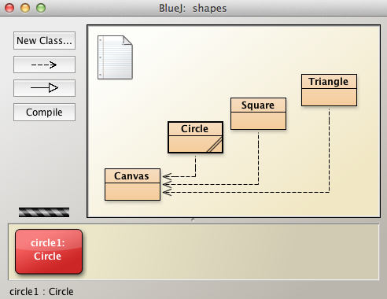
We could have given any valid Java variable name to the circle object.
We simply chose circle1 for convenience and to distinguish the object from future Circle objects that we might create.
We have now created our first Java object, an object of the Circle class.
A method in Java is a block of code that may be reused. Generally a method performs a single specific task.
Here is an example of a method that we shall later encounter in the Circle class.
public float area(float radius)
{
return 3.14159*radius*radius;
}The method calculates the area of a circle and hands back the value to the object calling (or invoking) the method.
Select the circle1 object on the object bench, right click and observe the drop-down list of methods (See Figure 1).
The list comprises the methods of the class Circle.
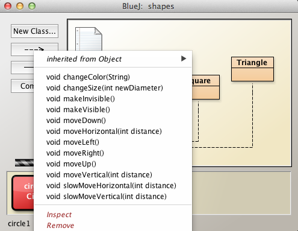
Select and click on the method makeVisible(). A picture represenation of the circle1 object that we created earlier should appear in a separate window (See Figure 2).
This circle object clearly has certain characteristics:
It is visible.
Its colour is blue.
It has a particular radius.
It is positioned at a particular location within its containing window.
As we progress through the labs we shall discover how these characteristics are defined.
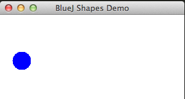
We will now invoke a selection of Circle methods.
Invoke the method makeInvisible().
Invoke makeVisible() again to have it reappear.
Invoke moveDown() again.
Invoke moveRight() folllowed by moveLeft().
Later we will explore how moving the circle object to a precise location might be achieved.
Here's a question. We have invoked the following methods:
void makeVisible();
void makeInvisible();
void moveDown();
void moveUp();
void moveRight();
void moveLeft();What characteristics do all these methods have in common?
Primitive data types as parameters
At the end of the last session we asked what characteristics the list of methods provided have in common.
Apart from beginning with void, notice that none of the methods contain parameters. That is, the space within the parentheses does not contain reference to any data. For example void moveDown().
In this section we will deal with parameter passing. By parameter passing is meant sending data into the method where it is used in producing the behaviour for which the method is designed.
We will examine some of the Circle methods which contain parameters.
Consider the Circle method:
void changeSize(int newDiameter);This method requires a parameter of type int (an integer).
We are at a disadvantage because we have not been informed of the scale of the circle object nor the units used for its diameter. So let's try 100 as a new diameter. This can be done by clicking on the red circle object on the object workbench, selecting void changeSize(int newDiameter) from the drop-down menu and entering 100 in the textbox provided.
Figure 1 shows the result. We've been lucky. The new circle might have been an invisible dot or completely overflowed its containing window, depending on the units defined within the Circle class.
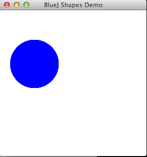
Experiment with different circle objects and diameters. You may discover some glitches in BlueJ itself. If so, this will have been an introduction to the the buggy world of software development.
Objects as parameters
We now deal with objects as parameters.
Now let's change the colour of circle1 object and in doing so pass an object, an instance of the String class.
Right click on the object, select and click on the method:
void changeColor(String);A dialog window illustrated in Figure 2 appears.
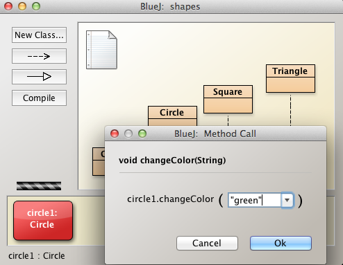
Enter the colour green, for example.
Note that it is necessary to enclose the word green in inverted commas (double quotation marks).
Figure 3 illustrates the result of invoking changeColor method.
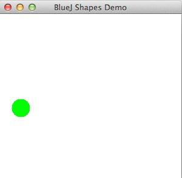
The method changeColor has been written in a manner that requires a value to be passed when it is called. This value is an example of a parameter. In this case we are passing an instance of a String object.
If you were writing Java code and wished to create such a String object and then use that as a parameter you could do it like this:
//Method 1: verbose
String newColor = "green";
circle1.changeColor(newColor);
//Method 2: preferrable
circle.changeColor("green");The period (.) between circle1 and changeColor is known as the dot operator and associates a class with its object. It allows an object to access its class methods, for example, as just shown.
Note the the term parameter is sometimes used interchangeably with the term argument.
One may create many instances of a class.
Each instance possesses state.
State is the complete set of values (attributes) stored in the fields of the class.
For example, here are the fields of Circle:
private int diameter;
private int xPosition;
private int yPosition;
private String color;
private boolean isVisible;Recreate circle1:
Right click on the Circle object, circle1, select and double click the menu option Inspect (Figure 1).
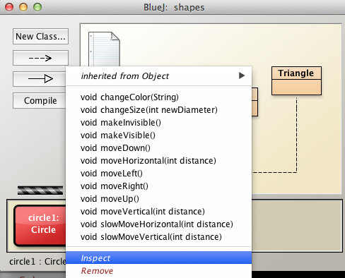
This opens what BlueJ refers to as the object inspector that describes the state of circle1.
The state defines the position of the circle object in the x-y plane, the diameter of the object, its colour and whether the object is visible or not. None of the attributes has been defined by you during the instantiation process. Therefore these values must have been generated internally. This indeed is the case and such values are sometimes referred to as default values.
Use the Close button to close the field graphic and invoke the makeVisible method. The circle object representation will appear in a window, the BlueShapesDemo window.
Create a second circle object named circle2. Invoke its makeVisible method. - Do this by selecting the red circle2 object on the workbench, right clicking to reveal a drop-down menu and then selecting the makeVisible method as illustrated in Figure 2.
Does circle2 appear in the BlueShapesDemo window?
It does. But since its state is exactly the same as that of circle1, it is not differentiable from circle1. There are several ways introduce state changes so as to visually distinguish between circle1 and circle2. Let's try the following:
The result of these three changes is shown in Figure 5.
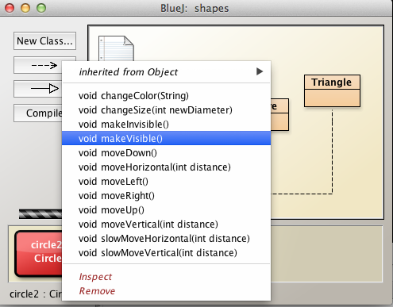
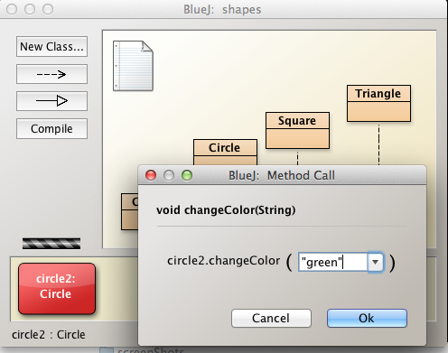
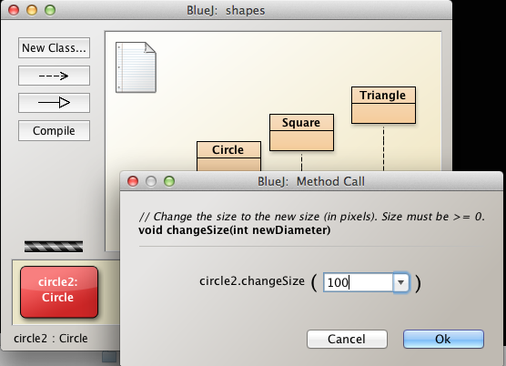
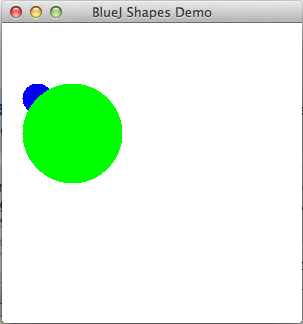
The two circle objects are now clearly distinguishable. However the relative positions of the objects might not be what one expected. Why, for example, are the circle objects not concentric? Explore the different objects' states and attempt to determine why this is not so.
The main purpose of this section of the lab has, however, been demonstrated. Multiple instances of the same class have been created. And these instances are independent of each other. Changing any of the attributes in one object does not influence the other.